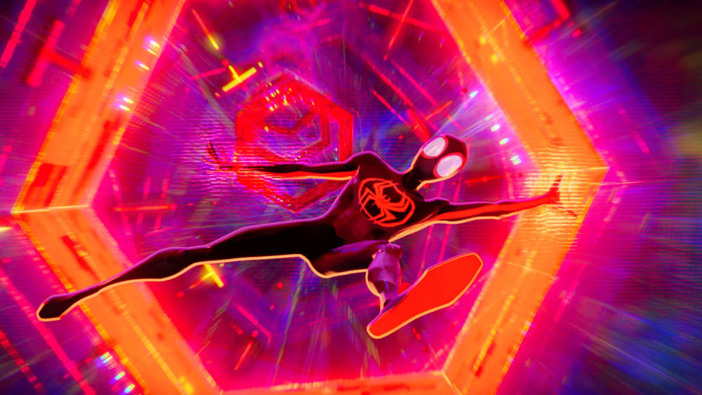

-
'Spider-Man: Across the Spider-Verse' puts the entire superhero genre to shame
by Mitchel Green - June 4, 2023
|
mitchelgreen34@gmail.com

source: The Movie Database
Multiverses are in vogue at the moment. “Rick and Morty,” “Everything Everywhere All At Once,” and the Marvel Cinematic Universe have dominated pop culture at one point or another over the last few years, each exploring multiversal storytelling with varying degrees of success. But the oversaturation of this concept has led to increasingly uncreative uses. Take “Doctor Strange and the Multiverse of Madness,” where their ideas of other universes include New York, but covered in vegetation and a barren wasteland with a creepy version of Dr. Strange’s building.
No matter how creative these other universes are, a similar problem arises in all media that use the concept: they are bound by what animators and production designers can reproduce on screen. Big CGI blockbusters like the ones Marvel puts out still need to look relatively realistic to incorporate live actors seamlessly. Even animated works like “Rick and Morty” are still held back creatively by a television budget and an irreverent disinterest in how these universes can change the basic look of the show.
In that sense, “Spider-Man: Across the Spider-Verse” is a big breath of fresh air among multiverse jumping media because the different universes all impact how the film presents itself. Gwen’s (Hailee Steinfeld) universe is animated to look like watercolor paintings, with lines and colors that melt away during the more emotionally heavy scenes between her and her father. Spider-Punk’s (Daniel Kaluuya) harsh, newspaper/magazine-style animation clashes with many other three-dimensional animated universes, feeling true to a character who always wants to go his own way. There’s even a stop-motion Lego universe that feels ready to crossover with “The Lego Movie” at any moment. These aren’t flashy “look what we can do” visual features. They all exist to reveal character, heighten emotion, or tell a joke.
But “Across the Spider-Verse” doesn’t just stand out among multiverse movies. It puts the entire superhero film genre to shame. Almost every new entry into the genre these days looks dull and lifeless — with actors standing around in a blank void animated around them. There’s no energy, no colors, and lighting that looks like a sitcom half the time, and the studio forgot to pay their energy bill the other half. It stems from an attempt to find a more realistic, grounded look that feels both unimaginative and still unrealistic.
“Across the Spider-Verse” has the benefit of being fully animated — well, for the most part — and so it has visual freedom that live-action superhero films don’t. The film drives home how much better it looks when the Spot (Jason Schwartzman) slips into a live-action universe, shot in what looks like the Marvel house style, and the dynamic energy of the sequence comes to a screeching halt.
Narratively, “Across the Spider-Verse” tries to do too much. The film keeps adding plotlines and characters that, while it isn’t hard to keep track of everything, the pacing starts to drag in scenes where the film needs to explain what is going on. It’s not terrible to sit through because the film puts in enough work to make the audience care about the characters and what is happening to them, but it slows down the non-stop energy in a way that “Into the Spider-Verse” never does.
But the story isn’t the main draw here, and even then, it’s still reasonably moving as far as these kinds of movies go. “Across the Spider-Verse,” like last year’s David Bowie documentary “Moonage Daydream,” is less about what it’s about than how it’s about. The opening prologue explaining Gwen’s status since the previous film is such a marvelous, engrossing collage of the smooth, melting watercolor visuals and the pulsating sound of Gwen drumming that it wasn’t noticeable until near the end of the sequence that I could barely hear what Gwen was saying — probably an issue with the theater’s sound as opposed to the mix. It’s one of the only superhero films I’ve seen interested in pushing the medium to its limits. Any film of this type released in its wake that doesn’t make similarly bold visual choices should be ashamed.